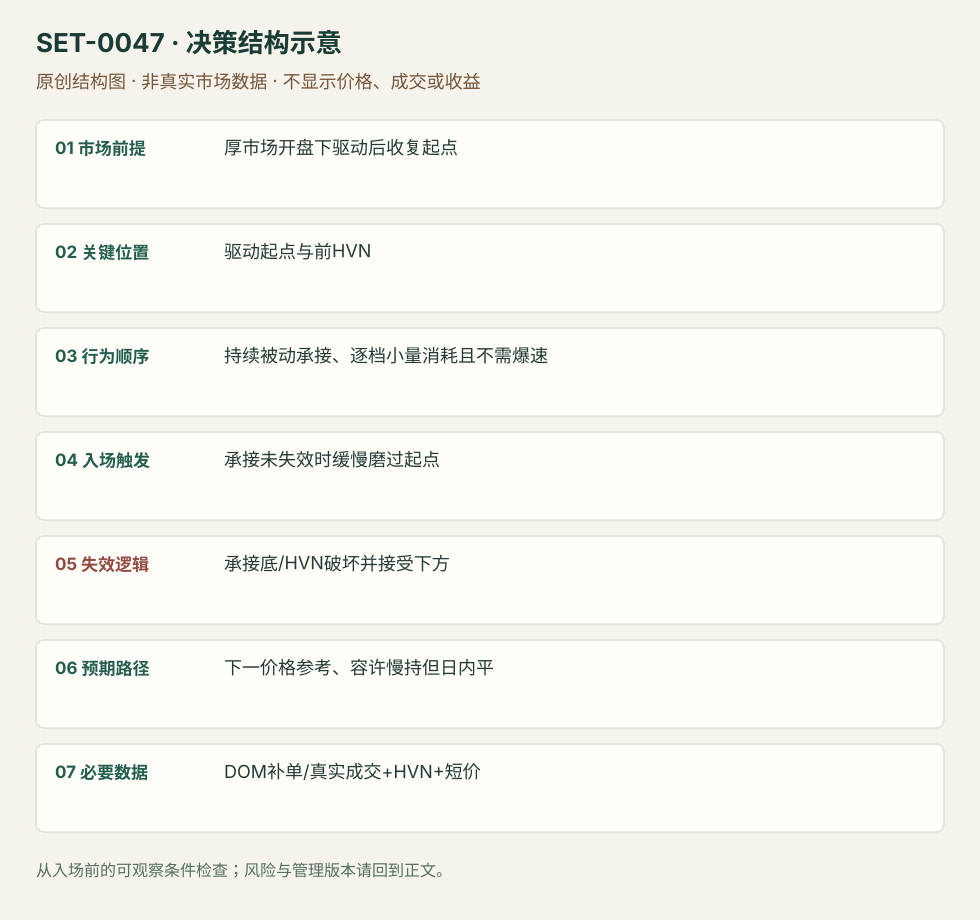

厚市场被动承接的缓慢磨过
Steady Absorption-driven Drift Break · SET-0047 · reviewed · v1.0.0
盈利证据：not_established。审查范围与来源版本见第13节；未知字段保留缺失原因。
1. 名称与快速概览
厚订单簿产品回到开盘驱动的起点，持续被动买方不让价格跌回，卖价逐档被小量消耗；即使没有速度爆发，也可交易缓慢磨过。慢并非自动有效，必须有持续持价。
记录口径：PA non_primary；必要数据 DOM、trade_prints、volume_profile、OHLC。名称性质：编辑性描述名，英文保留来源术语以便检索。reviewed 只表示本条规则与证据记录审查通过，盈利状态为 not_established。
2. 本质与行为假说
被动承接与渐进报价消耗不同于主动扫单。来源明确提醒Bund与Gold的典型深度不同；“没有爆量”不能作为一切产品的持仓理由。
3. 适用市场与环境
源例Bund先下Open Drive再收复起点，较厚市场。没有被动持价、薄产品新闻冲击或上方强吸收始终不解决时不能套。
来源实用市场：德国Bund期货。
Session：Bund来源早欧时段，时区未明；按Europe/Berlin产品时段另定session，入场与退出限该日计划段。
跨市场：本版不主张已经验证的跨市场迁移；更换市场必须重定数据来源、流动性与session。
4. 出现前的观察清单
标最初驱动起点、前HVN和下一价格参考；记DOM补单/成交而非仅显示数量。写清预期慢节奏及何种持价破坏会退出。
5. 形成过程与状态转换
开盘向下驱动 → 回到起点 → 卖出被持续承接 → 各档offer逐步被消耗 → 慢越起点 → 保持至目标或承接失效。
6. Entry trigger 与执行方式
源例173.63附近磨过时买，重点持续承接和逐档消耗。前提已经成立才进入；不能等后来一个小时涨完才称之前所有横盘是承接。
7. Invalidation 与止损逻辑
原例前HVN附近173.53；迁移版用入场前HVN/承接底外。若买方持续性消失并被接受在下方，立即否认，不因预期慢而扛损。
8. Exit、target 与 trade management
原例173.80区，花超过一小时；只要承接和结构未失效可给时间，目标/慢磨能力变差则处理。计划session结束强制退出。
9. 常见 variations
不同厚度产品需要独立证据；可用Footprint辅助观察真实成交。没有量速度爆发是区别0039的重要条件，不仅替同一突破换名称。
10. 失败方式与不交易条件
慢横盘其实供给压住且买方不持；将取消offer误认为全成交；不愿承认前HVN被破；按Gold速度预期错误地管理Bund或反之。
11. 与相近 setups 的区别
12. 图表与案例解读
已看价图与阶梯图，原作者入口/保护/目标可追溯；正文说一小时以上，未观看动态记录。
- [VIS-000050] Chart of a Bund Continuation Breakout Drift Trade；定位：Bund Continuation Breakout Drift。开盘跌后回原起点，红ENTRY线附近再上行，支持背景与位置。 验证：chart_viewed。
- [VIS-000051] Price Ladder During The Bund Trade with Entry, Stop and Target；定位：Price ladder during Bund trade。静态阶梯标173.63入口、173.53保护及173.81目标；只核价位，不当成DOM回放。 验证：chart_viewed。


本地原创示意（VIS-000104，非真实市场数据）：

小屏阅读可打开原尺寸示意图并缩放。

此图用于对照识别顺序与风险定义；不计入真实案例覆盖率。
视觉材料元数据与查看范围
- VIS-000050 · real_source_chart / structure_and_trigger / chart_viewed
品种：Bund；日期：未知/不适用；周期：未知/不适用；时区：未知/不适用
日期未在图中核对；周期未在图中核对；时区未在图中核对；来源图表不是成交审计 - VIS-000051 · real_source_chart / structure_and_trigger / chart_viewed
品种：Bund；日期：未知/不适用；周期：未知/不适用；时区：未知/不适用
日期未在图中核对；周期未在图中核对；时区未在图中核对；来源图表不是成交审计 - VIS-000104 · synthetic_structure_diagram / illustration_only / generated_not_market_evidence
品种：未知/不适用；日期：未知/不适用；周期：未知/不适用；时区：未知/不适用
无真实品种、日期或价格：这是结构示意
13. 证据、分歧与未知项
具体完整入口、保护、目标与持有期待来自Axia富信息单例；Jigsaw只概念澄清，核心独立佐证有限。静态图不核对600/400与实际275成交的动态序列。
- [EVD-000094] Axia Futures，《Steady Continuation Drift Breakout Trade》，SRC-0030；定位：Context / Price Ladder at63 / target80 stopHVN。支持：开盘下驱动后回起点，买方持续被动承接、offer逐档被小量消耗，速度不明显增加；慢磨过，风险前HVN、目标80区。
- [EVD-000095] Peter Davies，《Practical Application of Order Flow, Part 2》，SRC-0002；定位：PDF页序9 reversal types /13 momentum。支持：吸收与主动动量需要不同观测；概念帮助避免用大量成交或速度作为所有突破必要条件。
审查边界：来源份数与独立核心核验分开；当前类别为 independent_context_only。正文中的概念、官方事实、衍生解说或同族资料只按其支持范围使用。
14. 可用于复盘的检查表
- ☐ 下单前的前提可核对：厚市场开盘下驱动后收复起点
- ☐ 事前标记位置：驱动起点与前HVN
- ☐ 行为按顺序出现：持续被动承接、逐档小量消耗且不需爆速
- ☐ 实际触发符合选定版本：承接未失效时缓慢磨过起点
- ☐ 事先写明本次否定条件：承接底/HVN破坏并接受下方
- ☐ 目标/路径只用当时已知信息：下一价格参考、容许慢持但日内平
- ☐ 数据满足 DOM补单/真实成交+HVN+短价；记录时间、点差、滑点、队列和未成交
- ☐ 记录截止平仓及规则偏离；正常亏损不事后改成“未成立”
15. 后续验证问题
怎样区分吸收买方与只取消卖价？慢磨的最大等待怎样按产品测？与主动强度突破0039的分类是否一致？
双向相关导航
- SET-0039 同一水平前后成交能量改变的突破 0047 不要求速度/主动量爆发，而以厚市场持续被动持价渐进执行。
- SET-0046 弱多头背景下黏住卖价的向下清仓 0047 原理在厚产品的被动买方慢推，触发不依快速bid被拿和反弹浅。
- SET-0003 关键位置吸收后的反转 0003 用受阻成交反转，本条被动买方沿突破路径持续承接来支持延续。